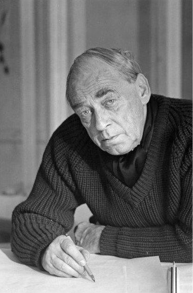
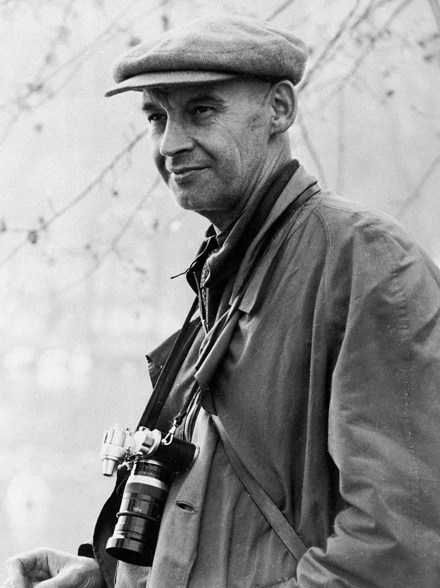
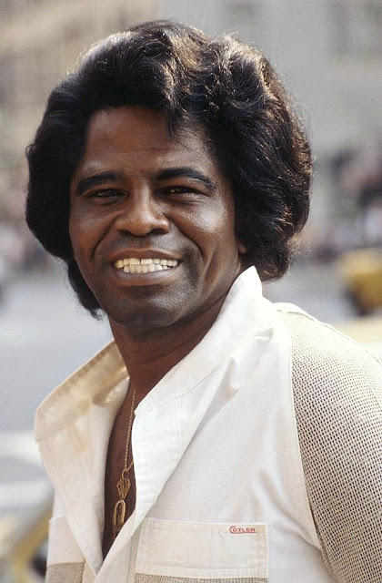
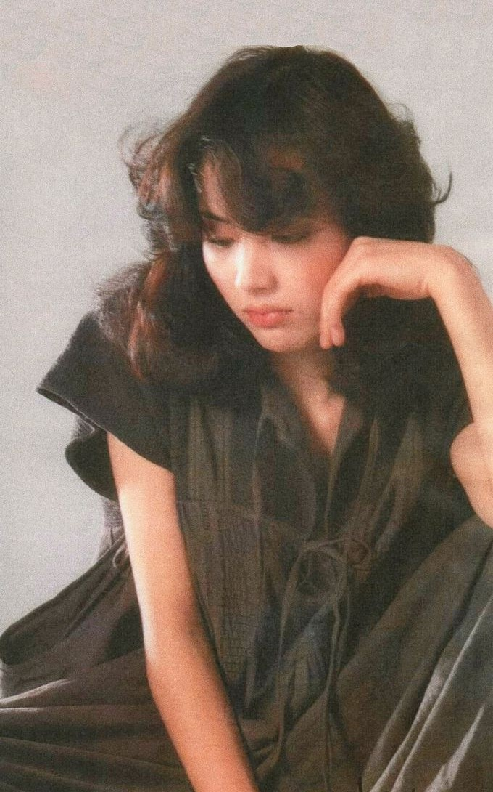
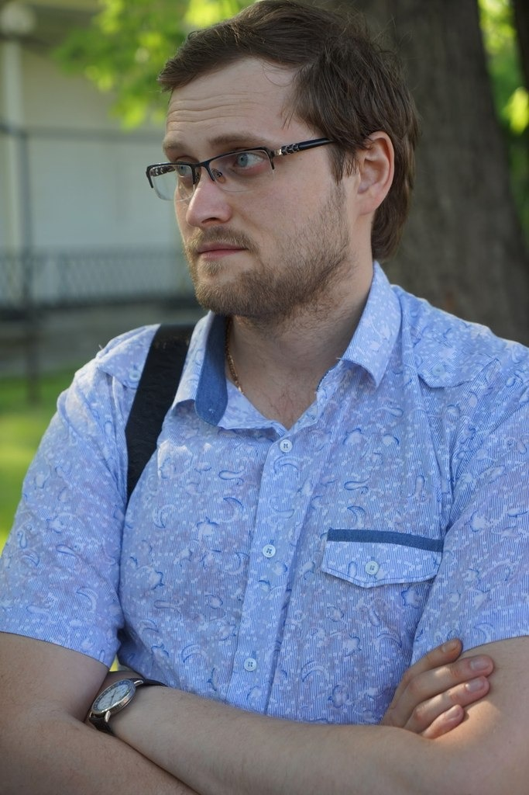
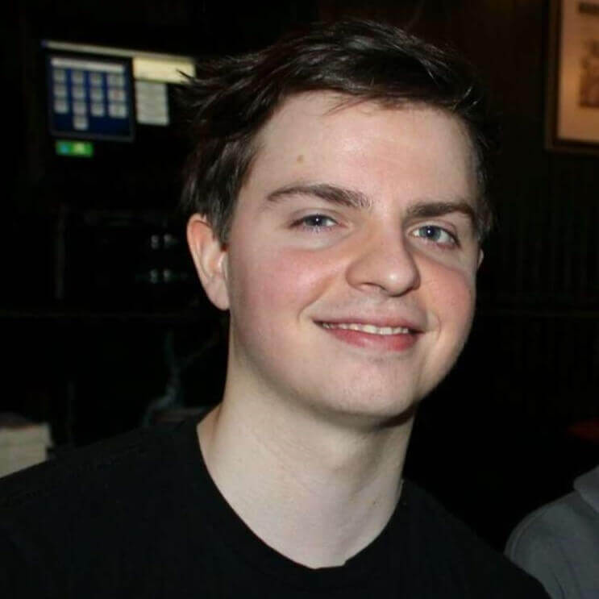

+Звёзды
+ Художники :
1) Репин Илья Ефимович (1844-1930)


2) Джотто ди Бондоне (1266-1337)


3) Иероним Босх (1460-1516)


.jpg)


4) Леонардо да Винчи (1452-1519)


5) Верещагин Василий Васильевич (1842-1904)


6) Иван Иванович Шишкин (1832-1898)


7) Франтишек Купка (1871-1957)


 Франтишек Купка. Взрыв II, 1923.jpg)


8) Джорджия О’Кифф (1887-1986)


Great Art Explained
+ Архитекторы/основатель :
1) Филиппо Брунеллески (1377-1446)


2) Петр Парлерж (1330-1399)


.jpg)
_03.jpg)


3) Андрей Юрьевич Боголюбский (1111-1174)


4) Тадао Андо (1941-н.в)


5) Кендзо Танге (1913-2005)


6) Заха Мохаммад Хадид (1950-2016)


.jpg)

7) Луис Генри Салливан (1856-1924)


+ Скульпторы :
1) Антонио Канова (1757-1822)


.jpg)
2) Донато ди Никколо ди Бетто Барди (1386-1466)


3) Ункэй (1150-1223)

.jpg)


+ Дизайнеры/компании :
1) Ёдзи Ямамото (1943-н.в.)

2) Иссэй Миякэ (1938-2022)

3) Дитер Рамс (1932-н.в)

4) Алвар Хуго Хенрик Аалто (1898-1976)

5) Александр Михайлович Родченко (1891-1956)

6) Uniqlo
7) Muji
+ Композиторы :
1) Людвиг ван Бетховен (1770-1827)
 S No 7 in A Major, Op 92 II, Allegretto S No 9 in D Minor, Op 125 IV, Presto "Ode to Joy"
S No 7 in A Major, Op 92 II, Allegretto S No 9 in D Minor, Op 125 IV, Presto "Ode to Joy"
2) Пётр Ильич Чайковский (1840-1893)
 The Violin Concerto in D Major, Op 35 Nutcracker Suite, Op 71a VIII, "Waltz of the Flowers"
The Violin Concerto in D Major, Op 35 Nutcracker Suite, Op 71a VIII, "Waltz of the Flowers"
3) Джузеппе Фортунино Франческо Верди (1813-1901)
.jpg) Requiem, II Sequence "Dies irae" La traviata, Act I, Scene II "Libiamo ne'lieti calici"
Requiem, II Sequence "Dies irae" La traviata, Act I, Scene II "Libiamo ne'lieti calici"
4) Эдвард Хагеруп Григ (1843-1907)

5) Камиль Сен-Санс (1835-1921)
 Aquarium Danse Macabre
Aquarium Danse Macabre
+ Mozart : Requiem Schubert : Ave Maria
+ Муз.группы :
1) «Queen»
.jpg)
3) «The Doors»

2) «The Beatles»

4) «SOAD»

5) «Oasis»

+ Муз.исполнители :
1) Francis Albert Sinatra (1915-1998)

2) Louis Daniel Armstrong (1901-1971)

3) David Bowie (1947-2016)
 The Man Who Sold The World
The Man Who Sold The World
4) George Kusunoki Miller (1992-н.в.)

5) Marshall Bruce Mathers III (1972-н.в.)

6) James Joseph Brown (1933-2006)

7) Miki Matsubara (1959-2004)

+ Блогеры :
1) «TheBroadwayShow»

2) «Kuplinov»

2) «UselessMouth»

3) «PewDiePie»

4) «Emiru»

5) «Arthas»

6) «varlamov»

7) «Jinnytty»

8) «zackrawrr»
.jpg)
9) «robcdee»

10) «Distortion2»

Twitch Following
+